- 从 MacDive 迁移导出哪个文件，以及如何迁移而不丢失任何内容。
- 从潜水电脑下载Shearwater 和其他蓝牙潜水电脑，或在 Mac 上使用数据线。
- Garmin Descent从手表或 Garmin Connect 导入 .fit 文件。
遇到问题？请参阅问题排查。Thermocline 是潜水日志：它显示你的潜水电脑记录的内容，从不计算减压。
获取 App
Thermocline 仅适用于 Apple 设备：iPhone、iPad、Mac 和 Apple Watch。测试期间通过 Apple 的 TestFlight App 安装。
| 任务 | iPhone 和 iPad | Mac |
|---|---|---|
| 加入测试版 | 加入测试版：一个链接适用于 iPhone、iPad、Mac 和 Apple Watch。在每台设备上打开它，然后从 TestFlight 安装。Apple Watch App 随 iPhone App 一起提供。所有设备都通过 iCloud 共享同一本潜水日志。 | |
| 在 2026年11月18日之前加入了 iPhone 测试版 | 那个 App 已经迁移。请参阅从旧的 iPhone App 迁移。 | |
| 保持最新 | TestFlight 提供新版本时，请更新你使用的每台设备。较旧的版本在更新之前会停止发送更改，并会提示这一点。不会丢失任何内容。 | |
首次启动和导览
首次启动时会询问你的名字、你的单位以及你的潜水来自哪里。单位以公制存储；更改单位只会改变显示方式。
| 任务 | iPhone 和 iPad | Mac |
|---|---|---|
| 设置 | 资料标签页 | Thermocline → 设置 |
| 导览 | 资料 → 帮助 → 显示导览 | 帮助 → 观看导览 |
导览会使用示例潜水日志（而非你的潜水日志）带你浏览每个屏幕。
本页的截屏显示的是导览中的示例潜水日志：其中的潜水和潜点都是虚构的。轻点截屏可查看大图。

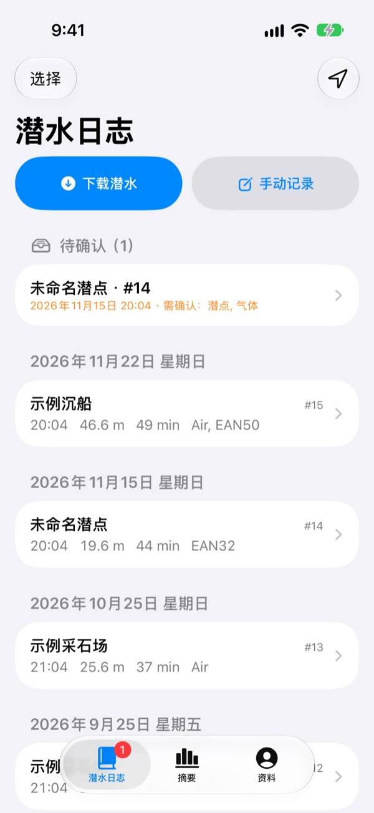
带上你的潜水日志
Thermocline 可以读取 MacDive（其文件夹、XML 或 UDDF）、Shearwater Cloud 数据库、Garmin .fit 文件、来自任何潜水日志的 UDDF，以及 CSV。你可以选择要添加哪些潜水，无法读取的内容都会列出，绝不会悄悄丢弃。
| 任务 | iPhone 和 iPad | Mac |
|---|---|---|
| 导入文件 | 资料 → 你的数据 → 导入潜水日志文件，然后从 iCloud云盘或“文件”中选取。 | “文件”菜单中的导入命令（⇧⌘I）。 |
| Garmin .fit 文件 | 一次选择多个。 | 选择多个，或整个文件夹。 |
| MacDive 的文件夹，含照片 | 仅限 Mac。之后再用 Mac App 把照片导入。 | 文件 → 从 MacDive 导入…，然后选择 MacDive 的文件夹：潜水、潜水照片和证书卡照片。MacDive 的文件不会被更改。 |
| 选择潜水 | 取消勾选你不需要的潜水，然后轻点导入。 | |
| 撤销导入 | 恢复点导入之前，在任何包含多次潜水的导入之前都会存储。 | 导入报告中的撤销导入…，或同一个恢复点。 |
导入完成后，报告会显示添加了多少次潜水、哪些项目未导入及其原因，以及需要检查的内容。文件中没有气体信息的潜水会在待确认中等待。
选择哪个 MacDive 文件
MacDive 可以提供它的 XML、它的 UDDF，或者（在 Mac 上）它的整个文件夹。它们包含的内容并不相同：
| 包含的内容 | MacDive XML | MacDive UDDF | MacDive 文件夹（Mac） |
|---|---|---|---|
| 潜水、潜点、潜伴、气体 | 是 | 是 | 是 |
| 气瓶容量 | 是 | 否：它的容量不是水容积，因此留空 | 是 |
| 潜水曲线 | 每次潜水 | 每次潜水 | 除 MacDive 在 iPhone 或 iPad 上下载的潜水以外的全部潜水，那些潜水由它加密存储 |
| 潜水过程中潜水电脑的 NDL 和 ppO₂ | 是 | 否 | 是，加密的潜水除外 |
| 潜水电脑的 CNS | 是 | 否 | 是 |
| 装备、标签和潜水类型 | 是 | 否 | 是 |
| 潜水照片和证书卡照片 | 否 | 否 | 是 |
| 任务 | iPhone 和 iPad | Mac |
|---|---|---|
| 最佳方式 | 从 MacDive 将你的潜水导出为 XML，把文件存储到 iCloud云盘，然后导入。 | 导入 MacDive 的文件夹，然后在其上导入 XML。XML 会补齐那些加密潜水的曲线、NDL 和 ppO₂。 |
| 已经导入了 UDDF | 也导入 XML。已在你潜水日志中的潜水会被匹配，不会重复添加，只会补齐缺少的内容，包括气瓶容量。你输入或更正过的内容都不会被更改。 | |
Garmin Descent 手表
Garmin Descent 每次潜水保存一个 .fit 文件。有两种方式获取：
- 从手表获取：用数据线把手表连接到 Mac，打开 GARMIN → Activity 文件夹。在 Mac 上可以导入整个 GARMIN 文件夹；不是潜水的文件（例如跑步和设置）会被跳过。
- 从 Garmin Connect 获取：打开该潜水并选择 导出原始值。这会得到一个 .zip 文件：先解压，然后导入其中的 .fit 文件。
位置来自手表的 GPS。放流潜水时，手表会把你出水的位置存为起点；导入时会找到你实际入水的位置，因此潜水会匹配到那个潜点。途经的其他沉船可以添加到备注中。

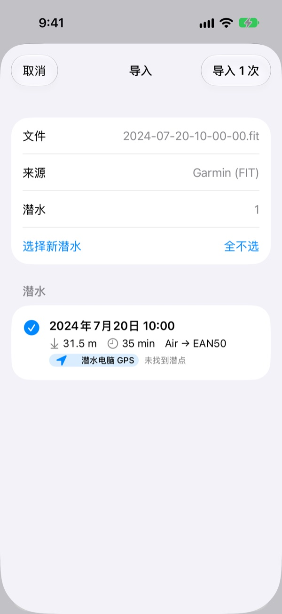
从潜水电脑下载潜水
先让潜水电脑进入蓝牙模式。在 Shearwater 上：Menu → Bluetooth。它会在该模式下保持大约两分钟。只会获取比你上次下载更新的潜水。
| 任务 | iPhone 和 iPad | Mac |
|---|---|---|
| 打开 | 潜水日志 → 下载潜水 | 文件 → 从潜水电脑下载…（⇧⌘D） |
| 连接 | 蓝牙。在附近下选取你的潜水电脑；首次连接时，输入其屏幕上显示的 PIN 码。 | 选择蓝牙或USB 数据线。使用数据线时，选取你的潜水电脑型号及其端口，并按照开始之前操作。 |
| 完成 | 取消勾选你不需要的潜水，然后轻点保留。未勾选的潜水会留在潜水电脑上，下次会再次提供。 | 下载。 |
时钟问题。每台潜水电脑的首次下载都会询问潜水电脑的时钟设置为哪个时区？大多数潜水电脑记录的是不含时区的当地时间，因此这能让你在旅行时保持潜水时间正确。答案会为该潜水电脑记住。
选择潜水后，你可以逐一查看，设置潜点和气体，也可以选择稍后完成：它们会在待确认中等待。
删除了一次潜水，想找回来？打开下载潜水电脑上的所有潜水。这会花更长时间；已在你潜水日志中的潜水会被跳过。

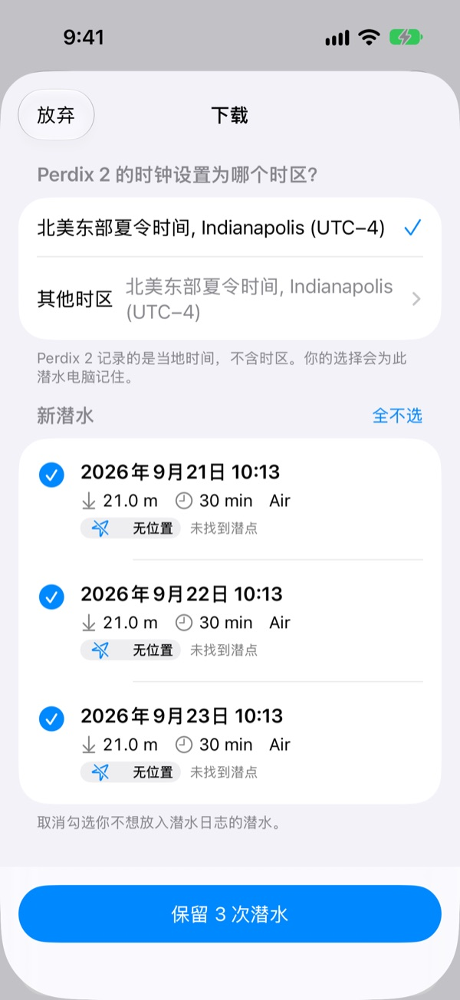
Shearwater Predator 和 Petrel 1
它们使用 iPhone 和 iPad 无法使用的较早蓝牙（经典蓝牙）。在 Mac 上，先在系统设置 → 蓝牙中配对潜水电脑，然后在下载窗口中选择USB 数据线：它的端口可能会出现在列表中。让潜水电脑进入蓝牙上传模式，然后选择“下载”。这还没有在真实的 Predator 或 Petrel 1 上试过，所以无论成功与否，都请发送下载日志。在 iPhone 上，请改为从 Shearwater Cloud 或 UDDF 文件导入它们的潜水。
支持的潜水电脑
Thermocline 使用 libdivecomputer 下载，这是许多潜水日志共用的开源库。它支持大多数制造商的数百种型号。要查看你的型号，请打开下载屏幕并选择支持的潜水电脑；每一款都会注明是可在 iPhone 和 iPad 上使用，还是需要 Mac。
| 连接方式 | 适用设备 | 目前已试过 |
|---|---|---|
| 低功耗蓝牙 | iPhone、iPad 和 Mac | Shearwater Perdix 和 Perdix 2。其他型号应该也能使用：请告诉我们。 |
| USB 或串口数据线 | 仅限 Mac | 已构建，尚未在真实硬件上试过。 |
| 经典蓝牙（Predator、Petrel 1 和其他较早型号） | 仅限 Mac，作为串口配对（方法） | 尚未试过。 |
| Garmin Descent（.fit 文件） | 在 iPhone、iPad 和 Mac 上导入（方法） | Descent 的潜水，包括放流潜水。 |
有我们还没试过的潜水电脑？帮我们测试。
确认潜点和气体
仍缺少潜点或尚未确认气体的潜水会在待确认中等待。这不会妨碍它们存储；你可以随时补填。
| 任务 | iPhone 和 iPad | Mac |
|---|---|---|
| 找到它们 | 在潜水日志顶部的待确认下。 | 前往 → 待确认（⌘2） |
| 确认 | 打开一次潜水，然后选取潜点并轻点是的，这些气体正确（或更正气体…）。 | 每次潜水上的横幅会提供确认潜点和气体…、选取潜点…或确认气体…。 |
Thermocline 根据潜水的位置推荐潜点：先是你自己的潜点，然后是内置列表中超过 76,000 个潜点和沉船，这些列表可离线使用。

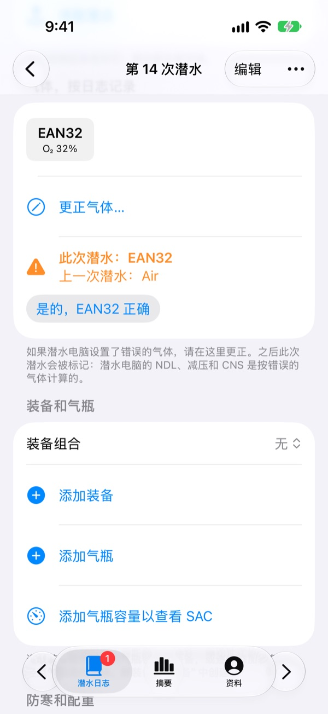
阅读一次潜水
| 任务 | iPhone 和 iPad | Mac |
|---|---|---|
| 读取任意时刻 | 在图表上拖动。 | 指向图表。 |
| 手动记录潜水 | 潜水日志 → 手动记录 | ⌘N |
- 安全数值固定在每次潜水顶部的一栏中，始终在同一位置。
- 潜水曲线：图表下方的标签可显示或隐藏气瓶、ppO₂、NDL、SAC、水温、CNS 和上升，以堆叠分栏或单张叠加图的方式。只有潜水记录过的数据才会有标签。NDL 是潜水电脑自己的数值，在减压期间停止，此时红色带表示减压停留。在较窄的 iPhone 上，标签保持在一行，可左右滚动。在首页上试一试。
- 循环呼吸器：对于任何记录了相关数据的潜水电脑或文件，ppO₂ 分栏会显示设定点以及表决后的 ppO₂（如有记录，还有每个传感器的数值），读数会给出该时刻的设定点。从稀释气切换到任何其他气体都会标记为应急气体（bailout）。
- 耗气：轻点或点按 SAC 数字旁边的如何计算？查看每一项输入：气瓶、其水容积、压力、温度和真实气体修正。
- 编辑：任何潜水都可以编辑。更正会保留潜水电脑的原始读数。
- 配重：第一次轻点 + 会设为无配重，用于没有佩戴配重的潜水。从那里轻点 − 即可清除。
- 备注中的链接：潜水备注中的网页链接可以轻点或点按。输入完成后，轻点键盘上方的完成：链接随即显示，YouTube 或 Vimeo 链接会在备注下方出现一个将 … 添加到视频链接按钮。要再次在备注中输入，请选择编辑备注。


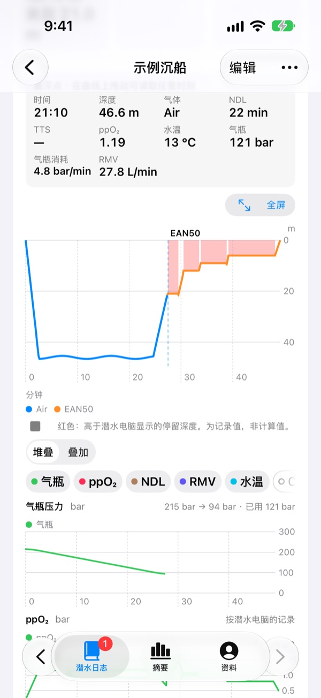


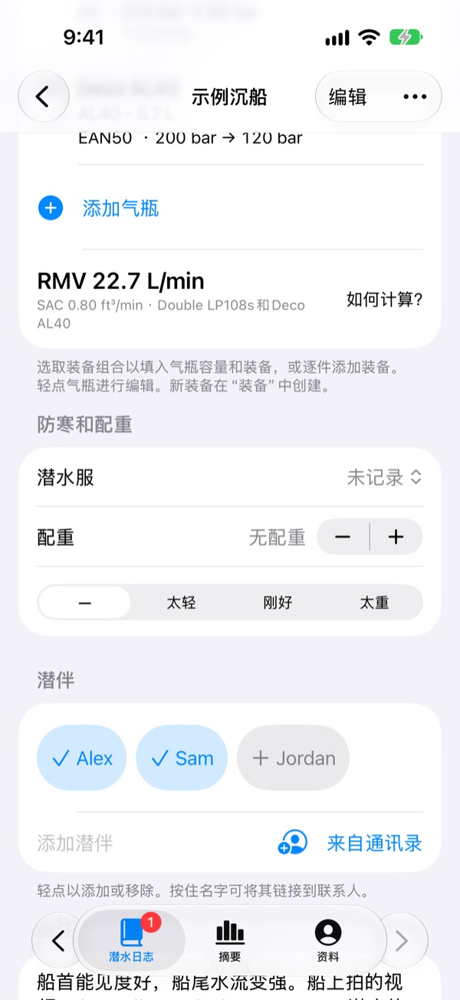

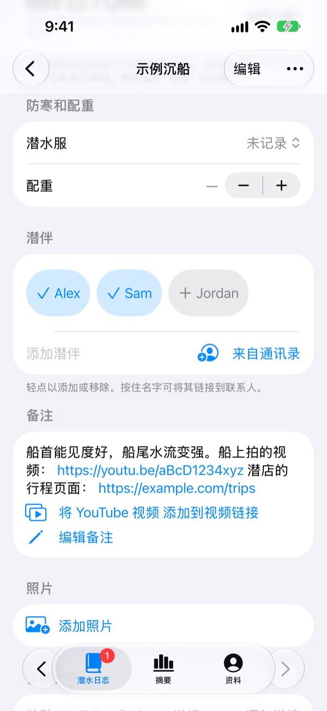

潜点、位置和 Apple Watch
| 任务 | iPhone 和 iPad | Mac |
|---|---|---|
| 添加潜点 | 资料 → 潜点，然后轻点添加按钮：查找或命名潜点或在此处标记位置（GPS）。 | 前往 → 潜点（⌘4），然后添加潜点… |
| 查看所有列出的潜点 | 资料 → 潜点 → 地图，然后轻点地球按钮，或一直捏合缩小。沉船为橙色，礁石和潜点为蓝色，你自己的潜点为红色旗帜。 | 潜点，然后点按工具栏中的显示地球，或一直缩小。 |
| 查找位置 | 没有位置的潜点会提供查找位置：在地图上核对推荐位置、输入坐标，或放置图钉。 | 查找位置…会逐一处理每个没有位置的潜点。 |
Apple Watch：在水面标记位置，它会在你的 iPhone 上的“待确认”中等待。请参阅Apple Watch。
潜点位置用于记录，不用于导航。

Apple Watch
手表 App 只做一件事：在水面标记你所在的位置，让潜水的潜点易于记录。它不记录潜水；潜水来自你的潜水电脑。它需要 watchOS 11 或更高版本，以及一台装有 Thermocline 的 iPhone。
| 任务 | Apple Watch | iPhone |
|---|---|---|
| 安装 | 它随 iPhone App 一起提供。如果手表上没有，请打开 iPhone 上的 Apple Watch App，在可用App下找到 Thermocline，然后轻点安装。首次使用时，请在手表上允许 Thermocline 使用位置。 | |
| 标记位置 | 在水面上、潜点上方，打开 Thermocline。等到显示定位良好，然后轻点标记位置。存储后，手表会轻触你的手腕。 | 位置会自动送达。如果 iPhone 不在范围内，会在两者再次靠近时发送。 |
| 命名 | 可选。标记后轻点添加名称，或之后在已标记的位置中操作，然后说出、手写或输入名称，例如“沉船船首”。完成后即会存储。 | 该名称会作为新潜点的名称提供。你可以使用它，也可以选择其他潜点。 |
| 确认 | 无需在手表上操作。 | 潜水日志 → 待确认。iPhone 联网时会查找该位置，推荐最近的已知潜点，并显示它最可能属于的那次潜水。确认或放弃它。 |
| 检查是否已发送 | 已标记的位置会显示每个位置是已发送到 iPhone还是等待发送到 iPhone，并附有地图。位置在 iPhone 上被确认或放弃后，就会从手表上移除。 | 确认后，该潜点会像其他潜点一样同步到你的其他设备。 |

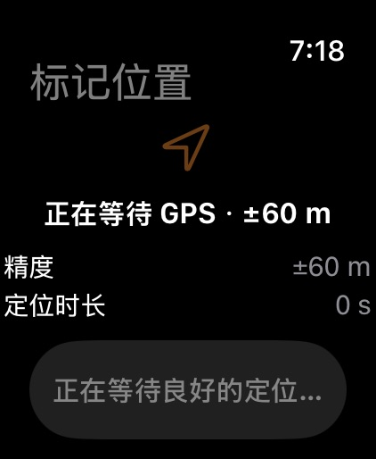

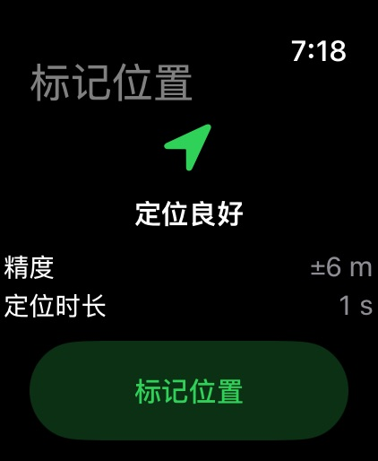

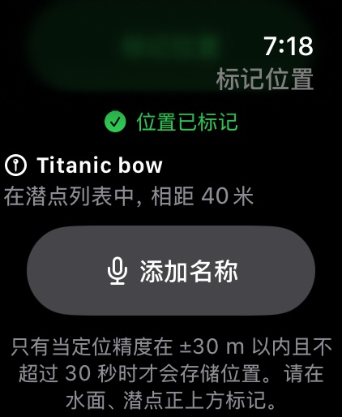

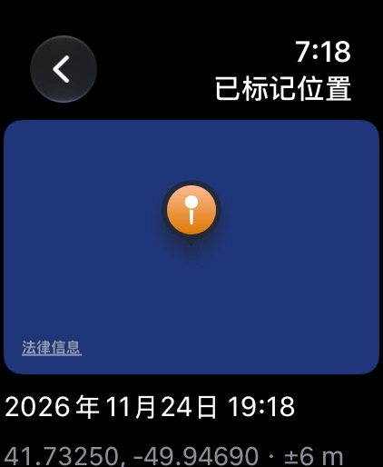
手表只会根据误差在 ±30 m 以内、且在最近 30 秒内获取的定位存储位置，并会忽略旧的缓存位置。请在水面标记，不要在水下标记。
潜点位置用于记录，不用于导航。
装备和气瓶
| 任务 | iPhone 和 iPad | Mac |
|---|---|---|
| 打开装备 | 资料 → 装备 | 前往 → 装备 |
- 在气瓶上，型号会打开气瓶目录：按制造商或型号搜索（例如“PST LP104”）以填入其公布的容量，或输入你自己的数字。
- 双瓶请勾选双瓶（带连通阀）。
- 刻有 + 的钢瓶：在最近一次水压测试保留了 + 的情况下，打开“+”标记。它会显示为例如 2400+。此开关在气瓶容量以立方英尺显示时出现。
- 每次潜水的气瓶位于该潜水的气体部分（添加气瓶、装备组合）。
合并和拼接潜水
- 合并用于由两台潜水电脑记录的同一次潜水。两份记录都会保留，你可以在图表上切换。
- 拼接用于因短暂出水而被分成两段的同一次潜水。
- Thermocline 绝不会自行执行其中任何一项操作。当它发现可能成对的潜水时，潜水日志顶部的横幅会提供检查。
| 任务 | iPhone 和 iPad | Mac |
|---|---|---|
| 自己操作 | 轻点选择，选择两次潜水，然后轻点合并或拼接。 | 选择两次潜水并右键点按：合并这些潜水…或拼接这些潜水… |
| 改变主意 | 立即撤销，或随时在该潜水上选择分开这些潜水。 | |
照片和视频链接
- 在潜水上轻点添加照片会把照片从你的图库拷贝到潜水日志中。
- 要节省 iCloud 空间，请在每台设备上打开同步 → 节省潜水照片占用的 iCloud 储存空间。之后照片会链接到 iCloud照片而不是拷贝，还可以添加图库中的视频。Thermocline 只在你打开此选项时才请求访问照片。
- 视频链接：在潜水的照片下方粘贴 YouTube 或 Vimeo 链接。只保留链接。备注中已有的链接可以从那里添加（请参阅阅读一次潜水）。
- 同一个视频用于多次潜水：选择这些潜水（在 iPhone 上，先轻点“选择”），选择编辑 … 次潜水…，然后在视频链接下添加链接。它会添加到每次所选潜水中，它们已有的链接也会保留。
摘要和耗气量
摘要标签页（在 Mac 上为边栏中的“摘要”）统计你的潜水日志：每年和每月的潜水次数、深度、气体、纪录、你在哪里潜水，以及你最常用的潜点和潜伴。在顶部选择一个范围（例如一年），然后轻点任意数字或柱条，查看其背后的潜水。
- 耗气量显示该范围内所有具有气瓶容量以及起始和结束压力的潜水的 SAC 和 RMV，按时间和深度加权。轻点它可查看哪些潜水被计入。
- 有些导入的潜水没有气瓶容量，因此“耗气量”一开始可能是空的（请参阅选择哪个 MacDive 文件）。在你的潜水上设置气瓶，无论是在“装备”中还是在每次潜水上，它就会填入数据。

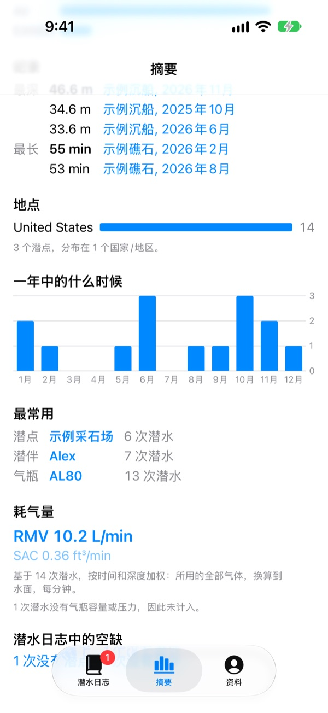
与 iCloud 同步
| 任务 | iPhone 和 iPad | Mac |
|---|---|---|
| 打开同步 | 资料 → 同步 | Thermocline → 设置 → 同步 |
之后，所有登录同一个 Apple账户的设备都会共享一本潜水日志，存储在你自己的私有 iCloud 中。离线时所做的更改会在设备上等待，并在恢复联网时发送。
“同步”部分会显示状态、所有等待发送的内容，以及此设备与你的其他设备是否一致。立即同步会马上检查。

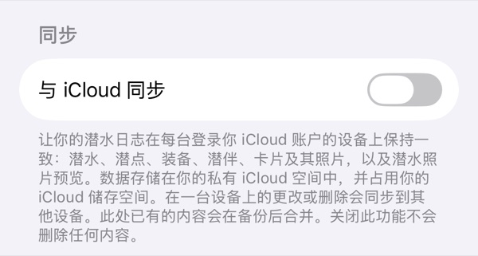
导出、恢复点和抹掉
| 任务 | iPhone 和 iPad | Mac |
|---|---|---|
| 导出 | 资料 → 你的数据 | “文件”菜单 |
| 恢复点 | 资料 → 你的数据 → 恢复点 | 设置 → 你的数据 → 恢复点 |
- 导出：UDDF 是完整的导出格式，也是你迁移到任何潜水日志的途径。还可以导出：电子表格（CSV）、MacDive XML、洞穴测绘书签（CSV），以及用于课程先决条件的经验摘要（文本）。
- 恢复点：在打开同步之前、大量导入之前、合并、拼接、抹掉之前，以及删除任何内容之前，都会存储一个恢复点。恢复时会先把你当前的潜水日志存储为恢复点，因此你可以撤销。
- 抹掉：抹掉潜水日志…会先提供导出选项。打开同步时，你的其他设备也会随之抹掉。

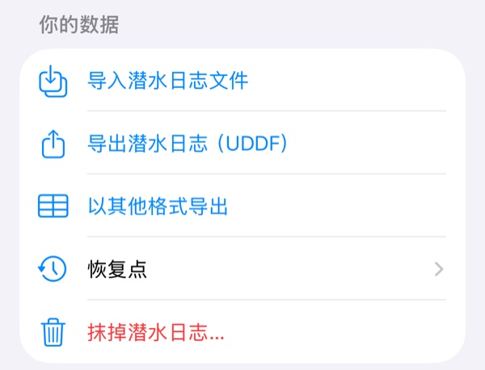
仍有问题？
请参阅问题排查，或从 TestFlight 发送反馈，或发送至 brian@616labs.net。